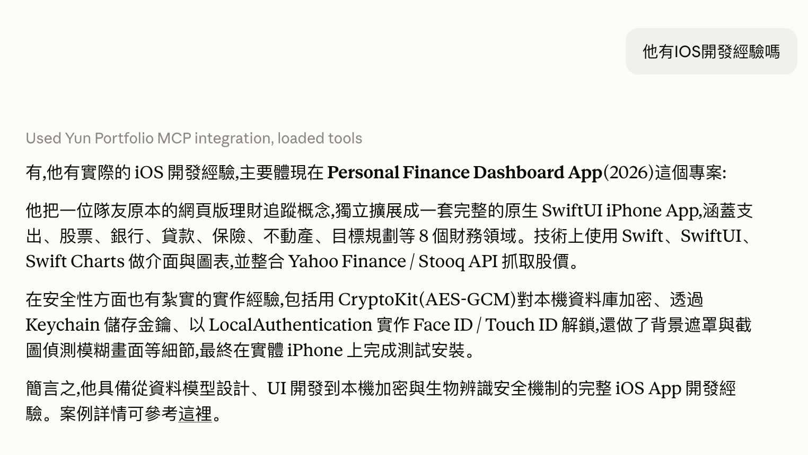
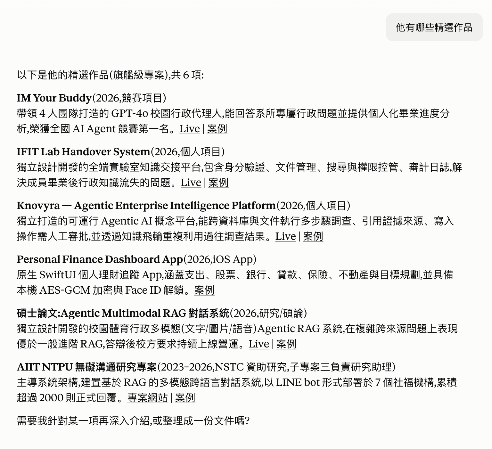

docker run, then Render builds and ships it — both sides run the exact same thing.git push triggers two pipelines: GitHub Actions only reports whether tests pass. What actually ships the new version is Render's own webhook — the two don't gate each other.This isn't a normal website — opening the live URL directly in a browser shows "Not Found", and that's expected. It's a protocol endpoint, not a page: an MCP client has to speak the Streamable HTTP protocol to it, not just visit the URL. Here are three ways to actually try it:
Settings → Connectors → Add custom connector → paste https://yun-portfolio-mcp.onrender.com/mcp → enable it from the + menu in any chat, then just ask a question about my work.
npx @modelcontextprotocol/inspector https://yun-portfolio-mcp.onrender.com/mcp — opens a local web page where you can call each tool directly and see the raw request and response.
Clone the repo, follow the README to run it over stdio, and add it to your own claude_desktop_config.json.
Built entirely on my own, end to end:
Two real questions asked through the Claude.ai Connector, answered live from the MCP server, not staged screenshots.


關於 Yun 的作品集，直接問我